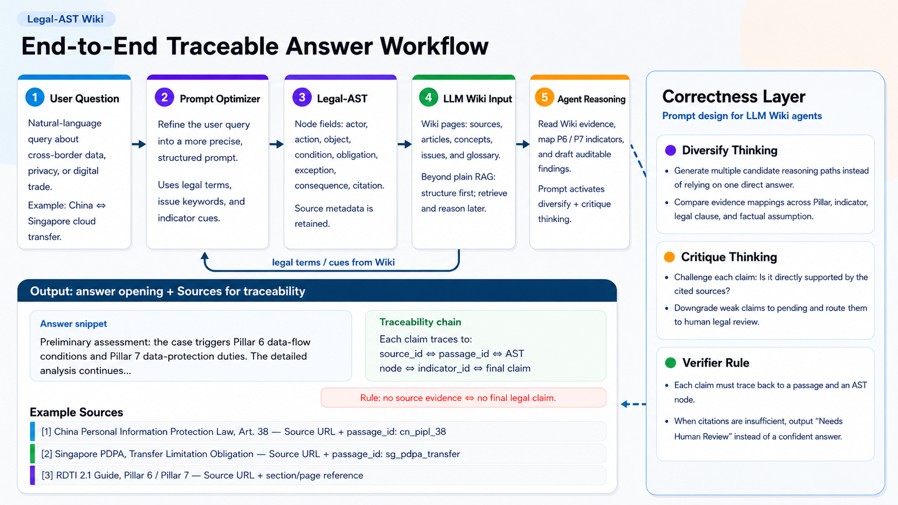

The first PDPA phrase looks like a complete prohibition on overseas transfers, while the second phrase creates a conditional permission if comparable protection requirements are met.
ConflictBan vs exception
Evidence-centered Legal-AST Wiki
The demo turns regulatory sources into Legal-AST nodes, classifies RDTII issues, explains the legal rule, cites exact evidence, and leaves final judgment to human reviewers.
Surface Layer
Three demo questions for Article 38, ShopPilot AI, and Singapore market entry.
Demo jurisdictions are pinned while reviewers inspect the fixed scenario.
Knowledge Layer
Controlled RDTII source set: 3 jurisdictions, 9 files, Pillars 6 and 7.
Nodes store source, article, conditions, obligations, exceptions, authority, and location.
Core Agent Layer
Separates rule explanation, case analysis, and forward-looking advisory.
Finds exact clauses and keeps page, section, URL, and OCR status.
Classifies legal content under Pillar 6 or Pillar 7, with room to extend to additional pillars.
Explains why conditional permission, not a total ban, is the primary standard.
Review Layer
Checks that conclusions are supported and flags low-confidence evidence.
Exports answer cards with citations, authority ranking, and reviewer notes.
Run id, provider, source mode, report snapshot.
Document title, URL, section, page, OCR confidence, snippet.
Conflict, precedence, rationale, implementation rule, and citations.
Pending nodes, irrelevant citations, caveats, verification prompts.

The first PDPA phrase looks like a complete prohibition on overseas transfers, while the second phrase creates a conditional permission if comparable protection requirements are met.
The conditional permission takes precedence because it is the operative legal rule: protection follows the data, and risk controls matter more than location alone.
The system normalizes terms, builds AST nodes, ranks authority, matches evidence, runs critique checks, and leaves low-confidence items pending for human review.
User question, pinned jurisdiction, uploaded files, and controlled RDTII documents enter the run.
Official HTML, text PDF, DOCX, and scanned PDF content become article-level legal nodes.
The system ranks binding law over guidelines, classifies content under Pillar 6 or Pillar 7, and can extend the same schema to future pillars.
The model may explain evidence and policy logic, but may not invent missing law or delete evidence.
Every claim links to exact source, section, page, URL, OCR status, and reviewer notes.
PDPA 2012, PDPA Amendment Act 2020, and transfer limitation materials for comparable protection analysis.
PIPL, cybersecurity, and sector materials used for Article 38, outbound transfer, and DPIA examples.
Official HTML is treated as highest authority; scanned amendments need OCR confidence review; non-binding ministry guidance is supporting context only.
Official binding sources outrank paraphrasing guidelines; secondary sources cannot support final legal conclusions alone.
Scanned amendments are OCRed, low-confidence text and broken article numbers are flagged before use.
Each clause keeps document title, section, page, URL, snippet, and AST node id.
The model may summarize and explain only matched evidence; it cannot invent law or remove inconvenient citations.
If a guideline conflicts with binding law, the output shows the conflict and marks the guideline as non-authoritative.